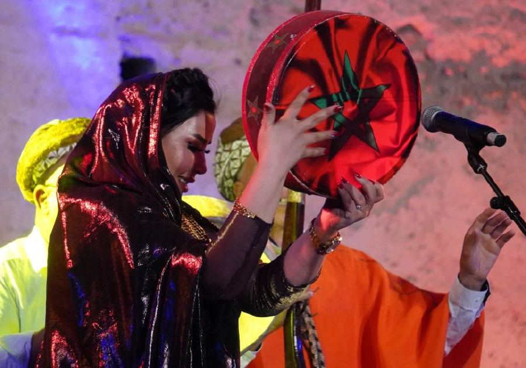

Festivals · Culture
Festival National des Arts Populaires Marrakech 2027
- Dates
- Dates TBA
- Venue
- Palais El Badi, Palais Bahia and Hôtel de Ville
- Location
- Marrakech, Morocco
- Format
- In-person
- Category
- Culture
- Industry
- National folk arts festival
- Organiser
- Festival National des Arts Populaires
- Official website
- https://fnap.ma/
About
Official site still presents the 55th edition (2–6 July 2026, now past) with the opening parade at Hôtel de Ville (Avenue Mohammed V) and main spectacles at Palais Badiâ and Palais Bahia, including more than 65 troupes. No official 2027 dates for the 56th edition. Morocco dates are local (Africa/Casablanca; typically UTC+1, with occasional Ramadan clock changes).
Topics: folk music, traditional dance, popular arts, heritage.
No organiser attendance figure found on the official pages checked (24 Nov 2026). Ranked by an estimated size tier 'large' (our judgement from format, venue and scale, not an official number).
Sources
- Official — https://fnap.ma/